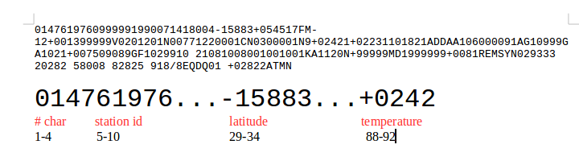

NOAA Format¶
Introduction to the NOAA fixed character format¶
- Most of the records always occurr in the same position. Or example, the temperatuer occurs from character 88 to character 92
- Some of the records have to divided. For example, the temperature is in Celcius, multiplied by 10. The real values is 242/10 = 24.2 C
- Missing data is represented by special numbers. For example, “9999” means there is no data. We have to ignore these records
- The full set is here: https://s3.console.aws.amazon.com/s3/buckets/paulhtremblay/noaa/data/?region=us-east-1&tab=overview
- Samples are here: https://s3.console.aws.amazon.com/s3/buckets/paulhtremblaypublic/noaa_data/?region=us-east-1&tab=overview
- https://s3-us-west-2.amazonaws.com/paulhtremblaypublic/noaa_data/us_stations_90_sample_small.csv
- https://s3-us-west-2.amazonaws.com/paulhtremblaypublic/noaa_data/us_stations_90_sample_small.txt
- https://s3-us-west-2.amazonaws.com/paulhtremblaypublic/noaa_data/us_stations_90s_sample_big.csv
- https://s3-us-west-2.amazonaws.com/paulhtremblaypublic/noaa_data/us_stations_90s_sample_big.txt
cat ../data/simple_work_count_words.txt | ./mapper.py | sort | ./reducer.py
Using Parsers¶
For this class, we will use a parser I wrote to process each line. Using a parser will make our work easier and allow us to focus on the important parts. Below is the code. You don’t need to understand this code or study it. Just understand the parser converts the fixed-format into a Python dictionary.
Example Use:
1 2 3 4 5 6 | import pprint
pp = pprint.PrettyPrinter(indent = 4)
import parse_noaa
line = "0147619760999991990071418004-15883+054517FM-12+001399999V0201201N00771220001CN0300001N9+02421+02231101821ADDAA106000091AG10999GA1021+007509089GF102991021081008001001001KA1120N+99999MD1999999+0081REMSYN029333 20282 58008 82825 918/8EQDQ01 +02822ATMN "
results_dict = parse_noaa.parse_line(line)
pp.pprint(results_dict)
|
The result:
{ 'air_temperature_observation_air_temperature': 24.2,
'air_temperature_observation_air_temperature_quality_code': '1',
'air_temperature_observation_dew_point_quality_code': '1',
'air_temperature_observation_dew_point_temperature': 22.3,
'atmospheric_pressure_observation_sea_level_pressure': 1018.2,
'atmospheric_pressure_observation_sea_level_pressure_quality_code': '1',
'fixed_weather_station_call_letter_identifier': '99999',
'fixed_weather_station_ncei_wban_identifier': 99999,
'fixed_weather_station_usaf_master_station_catalog_identifier': '619760',
'geophysical_point_observation_additional_data_identifier': 'ADD',
'geophysical_point_observation_data_source_flag': '4',
'geophysical_point_observation_elevation_dimension': 13,
'geophysical_point_observation_latitude_coordinate': -15.883,
'geophysical_point_observation_longitude_coordinate': 54.517,
'geophysical_report_type_code': 'FM-12',
'liquid_precipitation_occurrence_identifier': 'AA1',
'meteorological_point_observation_quality_control_process_name': 'V020',
'point_observation_date_time': datetime.datetime(1990, 7, 14, 18, 0),
'sky_condition_observation_cavok_code': 'N',
'sky_condition_observation_ceiling_determination_code': 'C',
'sky_condition_observation_ceiling_height_dimension': 22000,
'sky_condtion_observation_ceiling_quality_code': 1,
'total_variable_characters': 147,
'visibility_observation_distance_dimension': 30000,
'visibility_observation_distance_quality_code': 1,
'visibility_observation_quality_variability_code': 9,
'visibility_observation_variability_code': 'N',
'wind_observation_direction_angle': 120,
'wind_observation_direction_quality_code': 1,
'wind_observation_speed_quality_code': 1,
'wind_observation_speed_rate': 77,
'wind_observation_type_code': 'N'}
<< Introduction to NOAA Dataset | Using Map Reduce to find the average tempeartures for each state >>